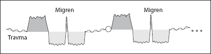

Migren
Klasik Batı tıbbının sorun yaşadığı, kesin bir çözüme ulaşamadığı alanlardan biri de migren. Aslında migrenin birçok çeşidi ve nedeni olabiliyor. Biz kısaca en çok rastlanan migren tipinden bahsedelim.
Yine bir “iyileşme krizi” olarak migrenden...

Eğer bu tip migreni iyi anlamak istiyorsanız, beynimizin başlattığı biyolojik programları detaylı olarak irdelediğimiz sayfaları tekrar okumanızı tavsiye ederim.
Evet, biyolojik programların akışı içerisinde beynimiz çözüm sonrası beyinde fiziksel bir iyileşme ortamı yaratıyor. İyileşme için bir sıvı ortam gerektiğini ilgili bölümde anlatmıştık. İşte bu programın 5 ile gösterilen “yenilenme” döneminde bu ödem kafamızda baskıya sebep olmaya başlıyor. Verdiği rahatsızlıksa, programın iyileşme krizinde doruğa ulaşıyor. İyileşme krizinde asıl amaç zaten bu ödemden kurtulmak ve beyni eski haline getirmek. Aslında, migren ağrılarının başladığı dönem de tam da bu nokta...
Çözüm tam da beklediğiniz gibi, migrene sebep olan ana olayı bulup, beynimizin yarattığı bu gereksiz programdan sonsuza kadar kurtulmak. Yapmanız gerekenleri biliyorsunuz.
Peki, ya hiçbir şekilde olayı tespit edemediyseniz?
Bir önceki bölümde NeuroFormat® tekniğiyle ağrıları nasıl geçirebileceğimizden bahsetmiştik. Tekniği bu şekilde migren ağrınızda uygulayın. Ağrıyı tetiklemeye ihtiyacınız olmayabilir, ama tavsiyem bir elinizin hep başınızın ağrıyan noktasında bulunması. Böylece beyninizin dikkatini ağrıyı çektiğiniz yere vermiş olursunuz.
Teşhis olmadan, yani migrene sebep olan olayı bilmeden de migreni tamamıyla temizleme ihtimaliniz var. Ancak, o zaman işiniz biraz sebat biraz da şansa kalır. Yine de bulabiliyorsanız, migren yaratan programa sebep olabilecek olayları birer birer temizleyerek migreninizi altın vuruşla tek bir seferde formatlamanızı öneririm.